已判 0 / 14 条 · 判完了
弹窗标签推送系统 · 2026-10-16 · 第 3 份产出 · 判断题
第 3 份｜运营每天看推送和弹窗的数据，这个数据看板够不够用？
按下面 14 条标准逐条看 AI 评审的结论（每条只答「符合」或「不符合」），你只判同意或不同意；也可补标准里缺的条目。
「游戏外推送」＝推播、短信、Facebook、LINE；「游戏内推送」＝弹窗、快显（你 10/13 定的两层）。「主管计划」＝你 10/10 转来的主管产品计划原文。
01判断标准：6 条，先游戏外、再游戏内，最后看数据可信与每天怎么拿到
功能覆盖游戏外推送：发送量、到达率与发送后的登录、付费
1推播、短信、Facebook、LINE 各自的发送、到达、到达率、点击在一张表里看齐；各方式另有发送对象在设定时长内的登录人数，储值类推送另有发送后 24 小时内的付费人数与金额，并标明只作后台数据
使用者 推送运营|出处 你定的：主管计划「增加數據情況（發送量，到達率等）」；你 10/16 选乙：「发送后登录扩到推播、Facebook、LINE，储值类推送加发送后 24 小时内付费人数、金额，只作后台数据」；业内做法：极光、OneSignal、Braze
业内顶尖产品怎么做
- 极光（EngageLab）：推送统计列发送、送达、展示、点击；送达率＝送达÷发送，点击率＝点击÷送达 极光文档
- OneSignal：每条推送报告列目标人数、发送、送达、设备确认收到、点击、失败、退订、被频率上限跳过 OneSignal 文档
- Braze：每条推送可设转化事件，可选「打开 App」「购买」或自定义事件；推送后在设定时限内（最长 30 天）发生即计入 Braze 文档
我们原型对应的部分
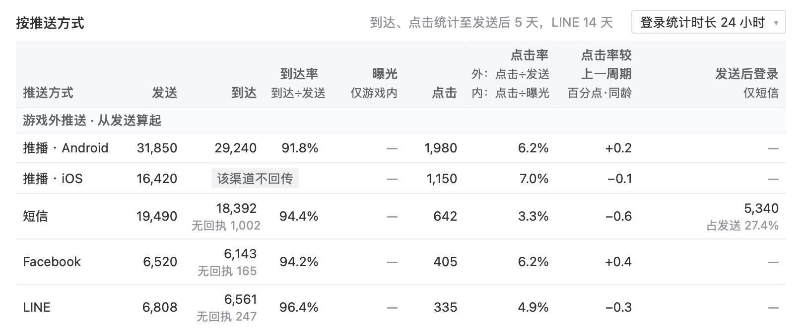
数据看板 › 概览 ›「按推送方式」（游戏外部分）
- 发送、到达、到达率、点击：推播（Android、iOS 分两行）、短信、Facebook、LINE 在「按推送方式」一张表里
- 发送后登录：表头写「仅短信」；短信 5,340（占发送 27.4%），推播、Facebook、LINE 为「—」；登录统计时长可选 1–120 小时
- 储值类推送发送后 24 小时内的付费人数与金额：我们这里没有；看板「口径说明」的「不统计的」一行写「付费金额、活跃、回流不作指标」
- 「只作后台数据」的标注：我们这里没有
AI 评审：否 发送后登录只有短信有数，储值类推送付费人数与金额没有，也没标只作后台数据
你判：
功能覆盖游戏外推送：iOS 推播的到达
2推播的到达、到达率包含 iOS 设备，不只算 Android
使用者 推送运营|出处 你定的：主管计划「到達率」；业内做法：OneSignal
业内顶尖产品怎么做
- OneSignal：App 内加装通知服务扩展（Notification Service Extension）后，iOS 设备收到推播即回报，报告单列「设备确认收到」；不装则 iOS 收到也不回报；付费版功能 OneSignal 文档
我们原型对应的部分
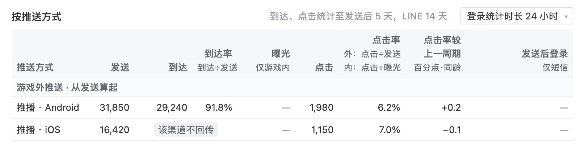
数据看板 › 概览 ›「按推送方式」
我们这里没有：推播 · iOS 的到达写「该渠道不回传」，到达率只算 Android，表头注明「不含 iOS 推播」。
AI 评审：否 iOS到达格「该渠道不回传」，到达率只算Android；缺iOS到达回传
你判：
功能覆盖游戏内推送：弹窗、快显有自己的入口
3弹窗、快显的曝光、点击有单独一页，能按位置、按每条规则看，已下架、已删除和改版前的数据照常可查
使用者 弹窗运营|出处 你定的：已定：弹窗看曝光、点击，游戏内、游戏外分两层；你 10/15「推送系统弹窗的数据在哪里看？」「版本更新后，仍需保留旧版本的弹窗数据」；业内做法：Braze
业内顶尖产品怎么做
- Braze：站内信单独出报告，列曝光人数、曝光次数、正文点击、按钮 1 与按钮 2 各自点击、关闭次数、转化 Braze 文档
我们原型对应的部分
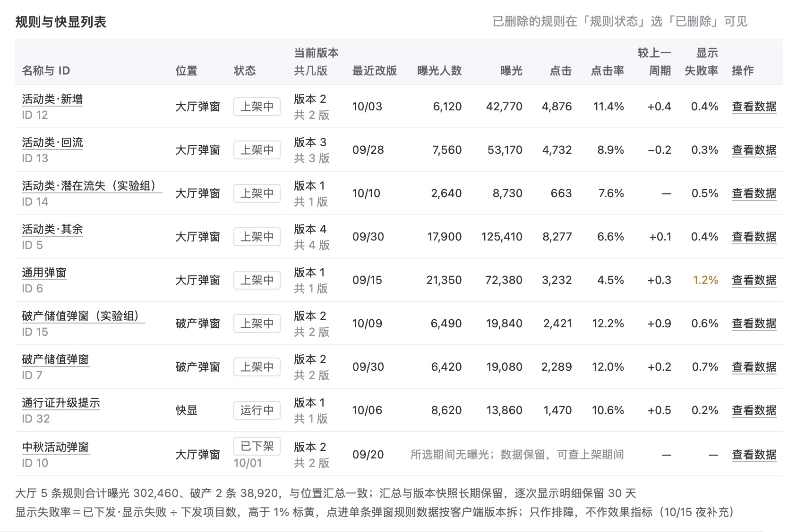
数据看板 › 游戏内推送数据 ›「规则与快显列表」
侧栏「数据看板」下单列「游戏内推送数据」；页上另有位置汇总、按日趋势（标出改版、发版、上限改动）、按客户端版本拆分；已删除规则在「规则状态」选「已删除」可见。
AI 评审：是 页12a按位置、规则列曝光点击；下架行数据保留，删除可筛，可选旧版本
你判：
功能覆盖游戏内推送：点击之后
4每条弹窗规则能看到点击后 24 小时内领取、购买的人数与次数
使用者 弹窗运营|出处 你定的：10/16「弹窗点击后的领取、购买列入数据采集需求」；业内做法：Braze、Firebase
我们原型对应的部分
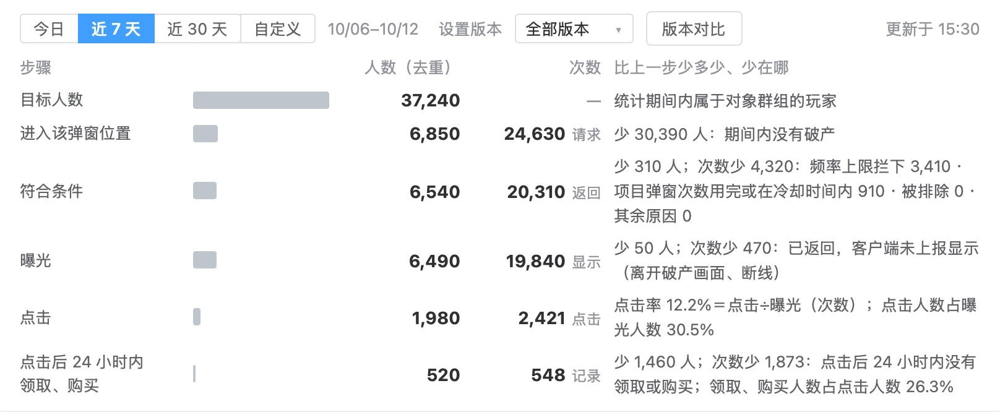
数据看板 › 单条弹窗规则数据 › 漏斗
漏斗末行「点击后 24 小时内领取、购买」，按记录里的「来源弹窗规则」计；从商店等其他入口的购买不计入。
AI 评审：否 页14漏斗末行领取、购买合并为520人/548次，看不到各自人数次数
你判：
事实与依据缺数、未满当场标出
5拿不到、记录不全或统计窗口未满的数，在出现的位置当场标出，不估算
使用者 推送运营、弹窗运营|出处 你定的：你 10/10「全都有记录，不管是推播还是弹窗。但可能会有不全的地方」；业内做法：极光、OneSignal
业内顶尖产品怎么做
- 极光（EngageLab）：送达、展示、点击只统计发送后 5 天，之后的不计入 极光文档
- OneSignal：报告单列「尚未送达」（排队或在途）；「退订」写明是发送时已失效，不是本条造成 OneSignal 文档
我们原型对应的部分
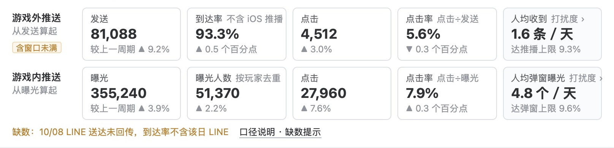
数据看板 › 概览 › 关键数字
关键数字标「含窗口未满」，趋势中未满日期画虚线；缺数一行写明哪天哪种方式没回传；表格里拿不到的格写「该渠道不回传」「无回执」「低于统计门槛」。
AI 评审：否 页14「点击后24小时内」行与按推送方式表未标窗口未满，只概览卡有标
你判：
功能覆盖每天怎么拿到：不用天天导出、盯盘
6日报定时发到运营邮箱，指标异常（如游戏发版后弹窗曝光为 0）主动提醒
使用者 推送运营、弹窗运营、运营负责人|出处 你 10/15「版本更新后……可能会出问题」；业内做法：Braze
业内顶尖产品怎么做
- Braze：报表可设每隔几天、几周、几月定时发送，邮件附 CSV 下载链接 Braze 文档
- Braze：活动告警：发送量超出设定的上下限时，发邮件或经 webhook 推到 Slack Braze 文档
我们原型对应的部分
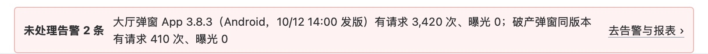
数据看板 › 概览 › 顶部告警条
数据看板 › 告警与报表 › 报表订阅
日报每天 09:00、周报每周一 09:00 发邮件；告警按预设规则检测，后台显示告警条并发邮件，可设值班人。
AI 评审：是 页12d日报每天09:00发运营；告警规则含发版后曝光0，有收件人与值班
你判：
业内做法都已打开官方文档核对。
02按评审维度补齐的标准：8 条
按评审维度表补齐上面没覆盖到的维度；每条小标前半是所属维度。
信息结构与主次关键数字在前，拆分在后
7第一屏先给各推送方式的关键数字及与上一周期的比较，按人群、发送小时、跳转类型的拆分和明细放在其下
看哪里 「概览」上半与「游戏外推送数据」下半|出处 写作标准：「树状结构：最上层条目最少、信息价值最高」；业内做法：NN/g 启发式第 8 条
业内顶尖产品怎么做
- NN/g 启发式第 8 条「美观与极简」：界面只放相关、常用的信息；每多一个元素，就削弱重要内容的可见度 NN/g 文章
我们原型对应的部分
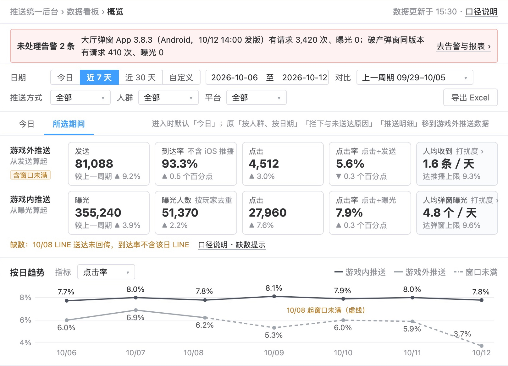
数据看板 › 概览（上半）
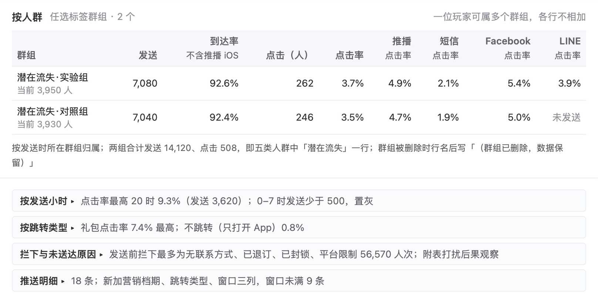
数据看板 › 游戏外推送数据（下半）
- 概览自上而下：告警条 → 日期与筛选 →「今日／所选期间」→ 关键数字（游戏外、游戏内各 5 格，带较上一周期）→ 按日趋势 → 按推送方式 → 五类人群对比 → 表现最好与最差
- 游戏外推送数据：按推送方式 → 按人群；按发送小时、按跳转类型、拦下与未送达原因、推送明细四块折叠，标题行写一句摘要
AI 评审：是 概览先给两层关键数字和较上一周期，人群、小时、跳转拆分都在其下
你判：
状态与防错无数据、查询失败时写明并给操作
8筛选后没有数据或查询失败时，图表与表格处写明是哪一种情况，并给出改筛选或重试的操作
看哪里 概览、游戏外推送数据、游戏内推送数据各图表与表格|出处 业内做法：NN/g 启发式第 1、9 条
业内顶尖产品怎么做
- NN/g 启发式第 1 条「系统状态可见」：随时让使用者知道系统处在什么状态，及时给出反馈 NN/g 文章
- NN/g 启发式第 9 条「错误信息」：用平实的话说清问题在哪，并给出解决办法 NN/g 文章
我们原型对应的部分
概览 ›「按推送方式」表下的说明
游戏内推送数据 ›「规则与快显列表」已下架一行
- 已画的情况：拿不到的格写「该渠道不回传」「无回执」「低于统计门槛」「不适用」并在表下解释；已下架规则写「所选期间无曝光；数据保留，可查上架期间」；没有发送的格写「未发送」；发送少于 500 的小时置灰写「样本不足」；顶部未处理告警条
- 没画的情况：筛选后整块没有数据、查询失败或超时，页上与「其他界面状态」里都没有对应画面
AI 评审：否 只画了单格缺数，整块无数据和查询失败都没画，也没有改筛选或重试
你判：
视觉完成度设计是否粗糙，数值列对齐
9按视觉完成度八个检查点逐项看没有不符合，其中表格数值列右对齐、同一指标小数位一致
看哪里 概览、游戏外推送数据、游戏内推送数据整页，重点看各表格数值列|出处 你定的：原型是否粗糙要判（10/16）；业内做法：Ant Design、NN/g
业内顶尖产品怎么做（八个检查点判「是」的条件）
- 对齐：同一区块的文字共用一个左侧起点；表单标签按冒号对齐；数字取相同位数并右对齐 Ant Design 文档
- 间距分级：关系越近间距越小；组内、组间、块间分三档（纵向 8／16／24px），全页一致 Ant Design 文档
- 字号与字重层级：页标题、区块标题、字段名、正文、辅助说明各一级，一眼看得出先看哪里 NN/g 文章
- 对比：主操作与次要操作、必填与选填、可用与禁用，外观上分得出 NN/g 文章
- 组件一致：同一种控件全稿一个样式和用法，并与现有后台（Element UI 风格）一致；同一操作用同一个词 Ant Design 文档 NN/g 启发式第 4 条
- 颜色与装饰：一色一义、全稿固定；没有不承载信息的边框、底色、图标 NN/g 启发式第 8 条
- 示例数据：真实形态的示例值，全稿前后一致；没有「xxx」「123」这类占位（项目内：原型任务说明）
- 基础排版：文字不截断、不溢出、不互相遮挡；折行在自然停顿处；并列几行有符号（项目内：你 10/12「这也太粗糙了吧」）
我们原型对应的部分
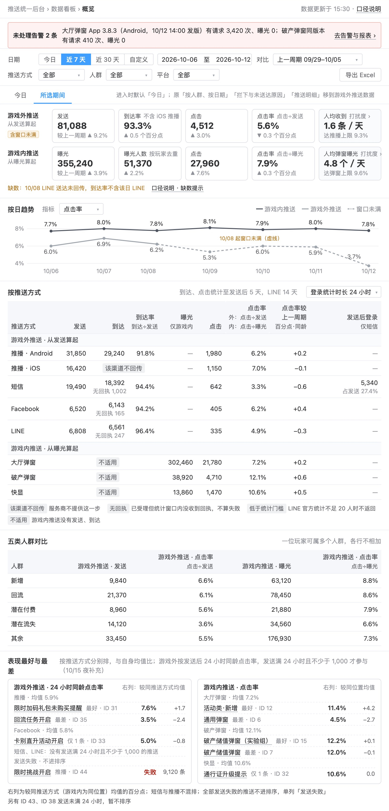
数据看板 › 概览 · 整页
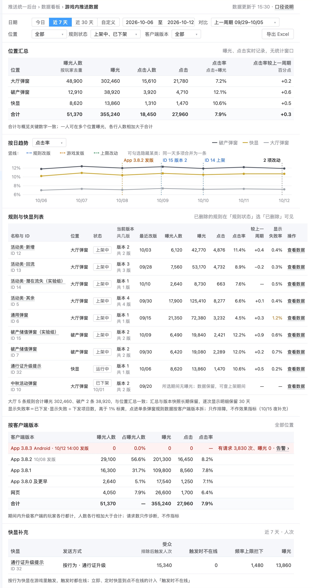
数据看板 › 游戏内推送数据 · 整页（游戏外推送数据见第 7 条下图）
- 对齐：各表数值列（发送、到达、到达率、点击、点击率）与表头；关键数字格内的数字与「较上一周期」
- 间距分级：关键数字两行之间、各区块之间、表格行高；「表现最好与最差」两张小卡内各行
- 字号与字重层级：区块标题、关键数字大字、表头、表下灰字说明
- 对比：「导出 Excel」与筛选控件；合计行与普通行；告警条与其他区块
- 组件一致：三页的日期筛选、下拉、页签、表格样式；「查看数据」链接
- 颜色与装饰：告警条红底、橙色「含窗口未满」、趋势图虚线、黄字显示失败率、按客户端版本表的红色一行
- 示例数据：发送、曝光、点击数在概览与各页合计、位置汇总合计之间对得上；规则名与 ID
- 基础排版：「规则与快显列表」最右「操作」列与窗口右缘；「表现最好与最差」标题折行；各表下两行灰字
AI 评审：否 「表现最好与最／差」断行，规则列表伸出右缘截掉按钮，橙色一色多义
你判：
改动可辨页首写明新页面及取代的报表
10页首写明它是新页面，并写出它取代或合并了哪几处现有报表（推播报表、数据平台的短信数据等）
看哪里 各页页眉说明|出处 写作标准：「写清是现状还是改后」；原型任务说明
依据的标准怎么写
- 写作标准：写清是现状还是改后——现状句写「现在」，做法句用「新建、加、改为」或写「改后」
- 原型任务说明：现有页面的改动标「新增」「改」；交付时说得出和现状比改了什么
我们原型对应的部分
概览、游戏外推送数据 · 页眉
游戏外推送数据 · 标题
游戏内推送数据 · 页眉
概览页眉写「新页面」和现状（推播报表没有到达；短信数据在数据平台；Facebook、LINE 与快显在现有后台没有报表）；游戏外推送数据标题写「原三个页签合并为一页」；游戏内推送数据页眉写「新页面」，没写取代哪处现有报表。
AI 评审：否 游戏内推送数据页眉只写新页面，概览也没明说取代哪几处现有报表
你判：
方向一致游戏外、游戏内分开呈现
11游戏外推送（推播、短信、Facebook、LINE）与游戏内推送（弹窗、快显）在看板上分两处呈现，没有放进同一张表合计
看哪里 「游戏外推送数据」与「游戏内推送数据」的分工；「概览」|出处 你定的：已定事项「推送分两层，不能混在一起说」
依据的标准怎么写
- 你定的（已定事项「推送分两层，不能混在一起说」）：游戏内（弹窗、快显，玩家在游戏里才看得到，数据从曝光开始）与游戏外（推播、短信、Facebook、LINE，数据看发送、到达、点击）；写「推送」时要说清是哪一层；后台里两层分开列
我们原型对应的部分
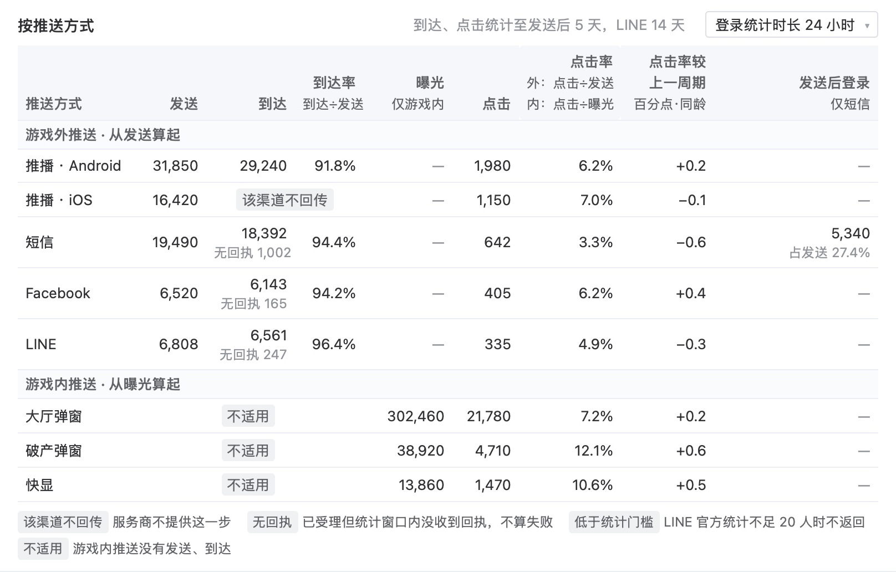
概览 ›「按推送方式」全表
- 侧栏：「游戏外推送数据」「游戏内推送数据」各一页
- 概览关键数字：游戏外、游戏内各一行，分别从发送、从曝光算起
- 概览「按推送方式」：一张表分两段（游戏外推送 · 从发送算起；游戏内推送 · 从曝光算起），点击率表头写「外：点击÷发送 内：点击÷曝光」，表内没有合计行
- 按日趋势：游戏内、游戏外两条线画在同一张图
- 五类人群对比：游戏外、游戏内各两列
AI 评审：是 两层各有一页；概览同表分两段、无合计行，趋势图两条线不相加
你判：
措辞与指代比例写明分子、分母和窗口
12看板上每个比例指标（到达率、点击率等）在页上写明分子、分母和统计窗口
看哪里 各指标名与表头|出处 写作标准：「每个比例标明分母，分母写进数字本身的标签」
依据的标准怎么写
- 写作标准：每个比例标明分母，分母写进数字本身的标签；换分母时比较的两边一起换；摘要卡和短标签里的数字写明是什么、分母是什么、和什么比
我们原型对应的部分
概览 › 关键数字
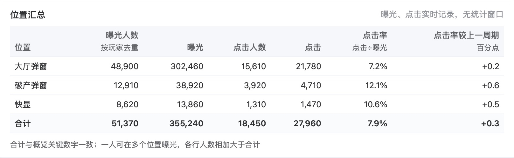
游戏内推送数据 ›「位置汇总」
- 写了算式：关键数字的两个点击率（点击÷发送、点击÷曝光）；「按推送方式」表的到达率（到达÷发送）与点击率；五类人群对比、位置汇总的点击率；规则与快显列表的「显示失败率」（表下写算式）
- 只写名称：关键数字「到达率」（旁注「不含 iOS 推播」）；游戏外推送数据「按人群」表的到达率与各渠道点击率；规则与快显列表、按客户端版本的点击率；「占曝光人数」
- 统计窗口：「按推送方式」表右上「到达、点击统计至发送后 5 天，LINE 14 天」；位置汇总右上「曝光、点击实时记录，无统计窗口」；表现最好与最差「发送后 24 小时同龄点击率」
AI 评审：否 关键数字到达率和按人群、规则列表的点击率没写算式，多处没写窗口
你判：
无多余内容每张图表对应一个日常问题
13每张图表都对应运营日常要回答的一个问题，没有只为版面完整而放的图表
看哪里 概览、游戏外推送数据、游戏内推送数据各图表|出处 写作标准：「不提供有效信息、反而增加阅读负担的图示」；业内做法：NN/g 启发式第 8 条
业内顶尖产品怎么做
- NN/g 启发式第 8 条「美观与极简」：不放无关或很少用到的信息；每多一个元素，就和相关信息争夺注意力 NN/g 文章
我们原型对应的部分
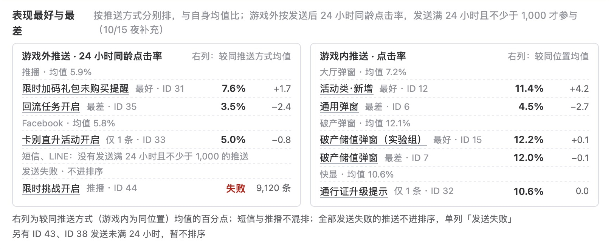
概览 ›「表现最好与最差」
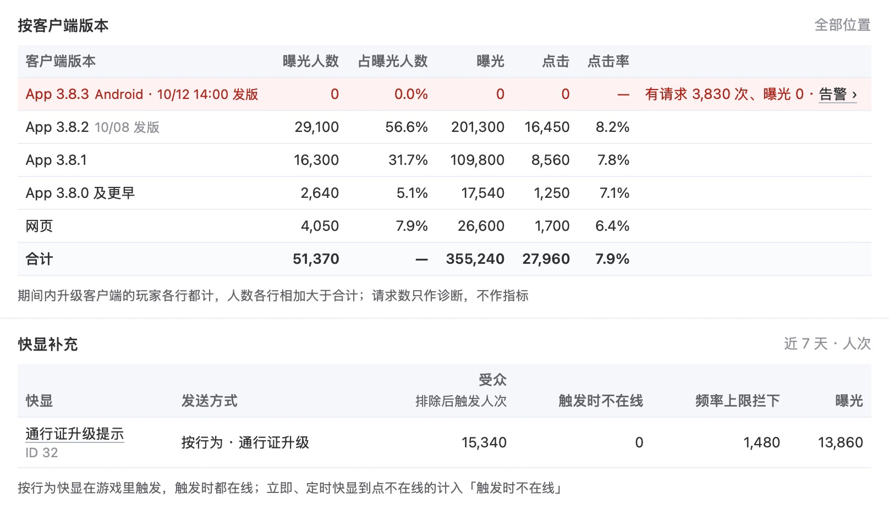
游戏内推送数据 ›「按客户端版本」「快显补充」
- 概览：告警条、关键数字、按日趋势、按推送方式、五类人群对比、表现最好与最差
- 游戏外推送数据：按推送方式、按人群；折叠的按发送小时、按跳转类型、拦下与未送达原因、推送明细
- 游戏内推送数据：位置汇总、按日趋势（标出改版、发版、上限改动）、规则与快显列表、按客户端版本（表下写「请求数只作诊断，不作指标」）、快显补充
AI 评审：是 每张图表都对得上一个问题，诊断用表已标明，没有凑版面的图表
你判：
措辞与指代整页句式：说明与表下文字的开头
14数据看板各页的说明与表下文字，没有成片以同一主语或同一句式开头的句子，上下文已确定的主语没有逐句写出
看哪里 数据看板八页（概览、游戏外推送数据、游戏内推送数据、档期汇总、触达与打扰、告警与报表、单条推送数据、单条弹窗规则数据）的表下文字与右侧说明栏|出处 你 10/15：「永远是运营在开头，这三个字真的有必要？」；措辞审查「整稿通读」
依据的标准怎么写
- 措辞审查「整稿通读」：逐句查完后通读全稿，同一开头、同一句式反复出现的删去或改写；全稿主体已经明确的不逐句写出，例如运营用的后台不写「运营在……」；补主语只补读者会读错或读不出的
- 你 10/15（当时原型改稿后有 63 处以「运营」开头）：「永远是运营在开头，这三个字真的有必要？真的认真检查措辞了吗？」
我们原型对应的部分
- 以「运营」开头的句子：没有；页上的「运营01」「运营02」是示例数据里的账号名
- 表下与表旁文字（原文）
「到达、点击统计至发送后 5 天，LINE 14 天」
「一位玩家可属多个人群，各行不相加」
「按推送方式分别排，与自身均值比；游戏外按发送后 24 小时同龄点击率，发送满 24 小时且不少于 1,000 才参与」
「短信、LINE：没有发送满 24 小时且不少于 1,000 的推送」
图例「该渠道不回传」服务商不提供这一步；「无回执」已受理但统计窗口内没收到回执，不算失败
- 概览与游戏外推送数据页说明栏（12 条）的小标：概览分「今日」「所选期间」两个页签；关键数字分游戏外、游戏内两组，各与上一周期比较；按日趋势默认看点击率；拿不到的数据写明原因；五类人群并排对比；有未处理告警时顶部显示告警条；窗口未满：到达、点击仍在增长；打扰度小卡；点名称进入单条数据……
- 单条推送数据页说明栏（8 条）的小标：操作按钮随状态显示；漏斗从受众算到点击；发送前拦下与服务商未受理分开列；只重发可重试的部分；iOS 的到达写「该渠道不回传」；每次修改生成一个版本……
AI 评审：是 八页表下文字与说明栏开头各异，无「运营」开头，漏斗行是逐步固定格式
你判：
业内做法都已打开官方文档核对。
03参考案例：你推翻过的两份同类稿
例 1 弹窗数据找不到，看板简陋
- 你的原话
- 「推送系统弹窗的数据在哪里看？我怎么没找到？我看原型图里只有数据看板，而且很简陋啊。」（10/15）
- 当时的稿
- 10/14 原型：「数据看板」一页三个页签（各推送／按人群、按日期／未送达原因）；弹窗数据在第一个页签下半，与游戏外推送同页（下图）
- 改后
- 侧栏「数据看板」展开为概览、游戏外推送数据、游戏内推送数据、档期汇总、触达与打扰、告警与报表 6 页；弹窗、快显单列一页，可按每条规则看
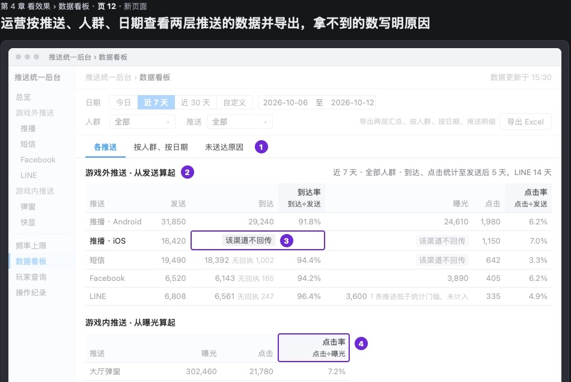
10/14 原型 · 数据看板（当时版本）
例 2 没写改版、发版后旧弹窗数据怎么留
- 你的原话
- 「对了，在版本更新后，仍需保留旧版本的弹窗数据。因为可能会出问题什么的」（10/15）
- 当时的稿
- 10/14 原型的弹窗数据不分版本：没有按客户端版本拆，也没写规则改设置、游戏发版后旧数据怎么保留
- 改后
- 规则改设置存为新版本，各版本数据分开保留、可两版对比；游戏内推送数据按客户端版本拆，趋势上标出发版与改版；已下架、已删除规则的数据照常可查
04怎么判
直接在页面上点：每条下面点「同意」或「不同意」（不同意可写一句理由），页面最下面可补还缺的标准；点完自动保存，判完在对话里说一声「判完了」即可。
05还缺什么，判完没有
原文：原型 · 数据看板概览 原型 · 游戏内推送数据 原型 · 单条弹窗规则数据 请你判的 10 份产出